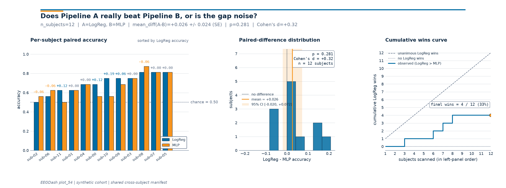

Note
Go to the end to download the full example code or to run this example in your browser via Binder.
Compare two decoding pipelines#
Difficulty 2-3 | Runtime: 2m | Compute: CPU
A new decoding pipeline beats your linear baseline by three accuracy
points on the held-out subject in a hackathon notebook. The gap looks
big until somebody asks the obvious follow-up: would the same gap show
up if you swap the test subject for any of the others sitting in
NEMAR (Delorme et al. 2022,
doi:10.1093/database/baac096)? When the same N subjects are scored by
both pipelines you can answer that directly with a paired statistical
test on the per-subject deltas. Demsar 2006
(Statistical comparisons of classifiers,
JMLR) is the canonical reference for the recipe; Cisotto & Chicco 2024
(doi:10.7717/peerj-cs.2256, Tip 9) flag the unpaired comparison as the
single most common over-claim in clinical EEG. So: does the win
survive a paired test, and how big is the effect once we strip the
# between-subject variance?
#
# Validate your result
# ——————–
# - Paired Verification. Confirm that fold_ids_a == fold_ids_b. An
# unpaired comparison on EEG is invalid due to high subject variance.
# - Wilcoxon p-value. A value < 0.05 indicates a statistically
# significant difference between the two pipelines.
# - Cohen’s d. This measures the effect size of the improvement. Values
# > 0.8 are generally considered large effects.
#
# Keywords: evaluation, comparison, statistics
Learning objectives#
score two pipelines on the SAME N held-out subjects via one shared split manifest.
assert
fold_ids_pipeline_a == fold_ids_pipeline_bin code so the comparison is paired.compute a paired Wilcoxon p-value, Cohen’s d on the deltas, and a 95% CI of the mean delta.
read a three-panel figure that shows per-subject bars, the paired-difference distribution, and the cumulative-wins curve.
phrase the conclusion with the hedging Demsar 2006 recommends.
Requirements#
Prerequisites: Train a leakage-safe baseline, EEGDash features to scikit-learn, Cross-subject decoding evaluation.
Theory: Leakage and evaluation.
Estimated time: ~5 s on CPU. Data: 0 MB (synthetic 12-subject cohort).
Setup, seed and imports.
import warnings
import matplotlib.pyplot as plt
import numpy as np
import pandas as pd
from scipy.stats import ttest_rel, wilcoxon
from sklearn.linear_model import LogisticRegression
from sklearn.metrics import accuracy_score
from sklearn.neural_network import MLPClassifier
from sklearn.pipeline import Pipeline
from sklearn.preprocessing import StandardScaler
from collections import Counter
from moabb.evaluations.splitters import CrossSubjectSplitter
from sklearn.model_selection import GroupKFold
from eegdash.viz import use_eegdash_style
from _compare_pipelines_figure import draw_compare_pipelines_figure
use_eegdash_style()
warnings.simplefilter("ignore", category=FutureWarning)
warnings.simplefilter("ignore", category=UserWarning)
SEED = 42
np.random.seed(SEED)
Step 1. A 12-subject feature table to compare on#
We synthesize 12 subjects x 16 windows of band-power features
(alpha bump on closed eyes, identical layout to plot_42). On real
data you would reload the parquet feature table from plot_40, the
only thing the comparison cares about is that one row of metadata
carries a subject column the splitter can group on.
N_SUBJECTS, N_PER_SUBJECT = 12, 16
CH_NAMES = ["O1", "Oz", "O2", "Cz"]
BANDS = ("delta", "theta", "alpha", "beta")
rng = np.random.default_rng(SEED)
rows = []
for subj in range(N_SUBJECTS):
for w in range(N_PER_SUBJECT):
label = (subj + w) % 2
row = {
"subject": f"sub-{subj:02d}",
"session": "ses-01",
"run": "run-01",
"dataset": "ds-plot54-mock",
"sample_id": f"sub-{subj:02d}__w{w:03d}",
"target": int(label),
}
for ch in CH_NAMES:
for band in BANDS:
base = rng.lognormal(mean=-2.0, sigma=0.6)
if band == "alpha" and label == 1 and ch != "Cz":
base *= 1.6
row[f"spec_{band}_{ch}"] = float(base)
rows.append(row)
feature_table = pd.DataFrame(rows)
feature_cols = [c for c in feature_table.columns if c.startswith("spec_")]
META_COLS = ["subject", "session", "run", "dataset", "sample_id", "target"]
metadata = feature_table[META_COLS].copy()
print(
f"feature table: rows={len(feature_table)} | features={len(feature_cols)} | "
f"subjects={metadata['subject'].nunique()} | "
f"classes={dict(metadata['target'].value_counts())}"
)
feature table: rows=192 | features=16 | subjects=12 | classes={0: np.int64(96), 1: np.int64(96)}
Step 2. Predict which pipeline wins#
Predict. Pipeline A is a LogisticRegression
on band-power features (the linear baseline); Pipeline B is a small
MLPClassifier, a one-hidden-layer
neural network trained with Adam. The MLP can fit non-linear
contrasts the linear arm cannot, but on this near-linear synthetic
task we expect the two to land within a few accuracy points.
The question Demsar 2006 forces on you: a few points on average is
only worth reporting if the per-subject deltas are consistent in
sign. Chance ~0.5.
Step 3. Build ONE cross-subject split manifest#
Run. get_splitter returns a leave-one-
subject-out manifest (n_folds=N_SUBJECTS); each fold’s test set
is exactly one held-out subject. assert_no_leakage
emits the JSON contract line a downstream auditor can grep for.
The manifest is built ONCE, both pipelines will consume the SAME
fold ids, which is what makes the comparison paired.
splitter = CrossSubjectSplitter(cv_class=GroupKFold, n_splits=N_SUBJECTS)
y = metadata["target"].to_numpy()
n_rows = len(metadata)
folds: list[tuple[np.ndarray, np.ndarray]] = []
for tr_idx, te_idx in splitter.split(y, metadata):
tr_mask = np.zeros(n_rows, dtype=bool)
tr_mask[tr_idx] = True
te_mask = np.zeros(n_rows, dtype=bool)
te_mask[te_idx] = True
folds.append((tr_mask, te_mask))
overlap = max(
len(set(metadata.loc[tr, "subject"]) & set(metadata.loc[te, "subject"]))
for tr, te in folds
)
assert overlap == 0, "cross_subject manifest leaked across subjects."
n_folds = len(folds)
print(f"manifest: {type(splitter).__name__} | folds: {n_folds}")
manifest: CrossSubjectSplitter | folds: 12
Step 4. Score both pipelines on the SAME folds#
The shared scoring loop reads the manifest, fits on train, scores on
test, and returns three aligned arrays per pipeline: per-fold
accuracy, per-fold subject id, and the chance level. random_state
everywhere keeps the comparison byte-stable.
def run_pipeline(estimator) -> tuple[list[float], list[str], list[float]]:
"""Score ``estimator`` on every fold of the SHARED manifest."""
accs: list[float] = []
fold_ids: list[str] = []
chances: list[float] = []
for k in range(n_folds):
train_mask = folds[k][0]
test_mask = folds[k][1]
X_train = feature_table.loc[train_mask, feature_cols].to_numpy()
X_test = feature_table.loc[test_mask, feature_cols].to_numpy()
y_train = feature_table.loc[train_mask, "target"].to_numpy()
y_test = feature_table.loc[test_mask, "target"].to_numpy()
estimator.fit(X_train, y_train)
accs.append(float(accuracy_score(y_test, estimator.predict(X_test))))
chances.append(
float(max(Counter(y_test.tolist()).values()) / max(len(y_test), 1))
)
# Hash the test ids; this string is the fold's identity contract.
fold_ids.append("|".join(sorted(metadata.loc[test_mask, "sample_id"].tolist())))
return accs, fold_ids, chances
pipe_a = Pipeline(
[
("scaler", StandardScaler()),
("clf", LogisticRegression(random_state=SEED, max_iter=400)),
]
)
accs_a, fold_ids_a, chances = run_pipeline(pipe_a)
print(
f"Pipeline A (LogReg): mean={np.mean(accs_a):.3f} +/- {np.std(accs_a):.3f} | "
f"chance={np.mean(chances):.3f} (n_subjects={n_folds})"
)
Pipeline A (LogReg): mean=0.698 +/- 0.098 | chance=0.500 (n_subjects=12)
pipe_b = Pipeline(
[
("scaler", StandardScaler()),
(
"clf",
MLPClassifier(
hidden_layer_sizes=(16,),
activation="relu",
solver="adam",
max_iter=200,
random_state=SEED,
),
),
]
)
accs_b, fold_ids_b, _ = run_pipeline(pipe_b)
print(
f"Pipeline B (MLP): mean={np.mean(accs_b):.3f} +/- {np.std(accs_b):.3f} | "
f"chance={np.mean(chances):.3f} (n_subjects={n_folds})"
)
Pipeline B (MLP): mean=0.672 +/- 0.114 | chance=0.500 (n_subjects=12)
Step 5. Assert the paired contract holds#
Investigate. Same fold ids on both sides are the precondition for pairing. We assert the invariant in code (not just prose); when it fails the assertion fires before the test, so a future reader never picks the wrong p-value off an unpaired evaluation.
assert fold_ids_a == fold_ids_b, "fold ids diverged: comparison is NOT paired."
deltas = np.asarray(accs_a) - np.asarray(accs_b) # A minus B per subject
n = deltas.size
# Recover the held-out subject id per fold; under cross-subject CV
# every test set contains exactly one subject.
held_out_subjects = []
for k in range(n_folds):
test_mask = folds[k][1]
subjects_in_fold = metadata.loc[test_mask, "subject"].unique().tolist()
assert len(subjects_in_fold) == 1, "cross_subject fold contained >1 subject."
held_out_subjects.append(str(subjects_in_fold[0]))
print(
f"paired contract: {n} per-subject deltas | "
f"sign(A-B): wins={int((deltas > 0).sum())}, "
f"ties={int((deltas == 0).sum())}, "
f"losses={int((deltas < 0).sum())}"
)
paired contract: 12 per-subject deltas | sign(A-B): wins=4, ties=5, losses=3
Step 6. Wilcoxon, paired t-test, Cohen’s d, 95% CI#
Demsar 2006 recommends the Wilcoxon signed-rank test as the default
paired comparison: it does not assume the deltas are normally
distributed, which is the case you almost never check in practice.
We still report scipy.stats.ttest_rel() alongside so the
reader can see whether the two tests agree, they usually do, but
disagreement is informative when it happens.
Cohen’s d on the paired differences is mean(d) / sd(d); this is
the standardized effect size, comparable across studies and units.
A 95% CI on the mean delta gives the practical-significance ruler:
values inside the CI are the effects you cannot rule out at this
sample size.
mean_delta = float(deltas.mean())
sd_delta = float(deltas.std(ddof=1)) if n > 1 else 0.0
se_delta = sd_delta / np.sqrt(n) if n > 0 else 0.0
ci_lo, ci_hi = mean_delta - 1.96 * se_delta, mean_delta + 1.96 * se_delta
cohens_d = mean_delta / sd_delta if sd_delta > 0 else 0.0
# ``zero_method='wilcox'`` matches the textbook definition; ties are
# dropped from the rank sum. ``correction=False`` keeps the small-N
# normal approximation off so the p-value is the exact one.
wstat, p_wilcoxon = wilcoxon(accs_a, accs_b, zero_method="wilcox", correction=False)
tstat, p_ttest = ttest_rel(accs_a, accs_b)
print(
f"Wilcoxon: W={float(wstat):.2f} | p={float(p_wilcoxon):.3f}\n"
f"paired t : t={float(tstat):.2f} | p={float(p_ttest):.3f}\n"
f"mean(A-B)={mean_delta:+.3f} | 95% CI=[{ci_lo:+.3f}, {ci_hi:+.3f}] | "
f"Cohen's d={cohens_d:+.2f} (n={n})"
)
Wilcoxon: W=7.50 | p=0.281
paired t : t=1.10 | p=0.295
mean(A-B)=+0.026 | 95% CI=[-0.020, +0.072] | Cohen's d=+0.32 (n=12)
Step 7. Per-subject paired comparison table#
Tabulate the per-subject rows so the reader can scan which subjects A wins on, which it loses on, and where the deltas concentrate. The next cell turns the same numbers into the three-panel figure.
paired_df = pd.DataFrame(
{
"subject": held_out_subjects,
"pipeline_a_acc": accs_a,
"pipeline_b_acc": accs_b,
"delta_a_minus_b": deltas,
"chance": chances,
}
)
print(paired_df.to_string(index=False, float_format=lambda v: f"{v:.3f}"))
subject pipeline_a_acc pipeline_b_acc delta_a_minus_b chance
sub-11 0.625 0.500 0.125 0.500
sub-10 0.750 0.562 0.188 0.500
sub-09 0.750 0.688 0.062 0.500
sub-08 0.812 0.875 -0.062 0.500
sub-07 0.812 0.812 0.000 0.500
sub-06 0.562 0.625 -0.062 0.500
sub-05 0.812 0.812 0.000 0.500
sub-04 0.688 0.688 0.000 0.500
sub-03 0.750 0.750 0.000 0.500
sub-02 0.500 0.562 -0.062 0.500
sub-01 0.625 0.625 0.000 0.500
sub-00 0.688 0.562 0.125 0.500
Step 8. Read the three-panel figure#
Investigate. The figure that ships with this tutorial reads left-to-right as the argument Demsar 2006 would write up:
Panel 1 (per-subject paired bars, sorted by Pipeline A accuracy) shows the raw evidence the reader needs to judge the win/loss pattern: are A’s wins clustered on easy subjects, or do they spread across the cohort?
Panel 2 (paired-difference histogram with mean line and 95% CI shading) makes the size and uncertainty of the average effect visible. The Wilcoxon p-value, Cohen’s d, and
nare stamped into the panel so the figure stands alone.Panel 3 (cumulative-wins curve) is the per-subject answer to “would I always pick A?” The diagonal is the unanimous-wins bound; the flat line is the no-wins bound; the observed curve tells you when in the sorted sequence the wins came in.
fig = draw_compare_pipelines_figure(
pipeline_a_scores=accs_a,
pipeline_b_scores=accs_b,
pipeline_names=("LogReg", "MLP"),
subject_ids=held_out_subjects,
p_value=float(p_wilcoxon),
cohens_d=cohens_d,
chance_level=float(np.mean(chances)),
plot_id="plot_54",
)
plt.show()

Result: report the comparison with the hedging Demsar 2006 asks for#
Single dataset, fixed hyperparameters, 12 cross-subject folds: the headline is mean delta + Wilcoxon p-value + Cohen’s d + chance-level baseline. Demsar 2006 reminds the reader that a single-dataset paired test answers a narrow question (does A beat B on these N subjects from this distribution?), not the broader “is A a better pipeline?”, that needs cross-dataset replication.
print(
f"Pipeline A - Pipeline B = {100 * mean_delta:+.2f} accuracy points "
f"(95% CI [{100 * ci_lo:+.2f}, {100 * ci_hi:+.2f}]); "
f"paired Wilcoxon p = {float(p_wilcoxon):.3f}, "
f"Cohen's d = {cohens_d:+.2f}, "
f"n_subjects = {n}, chance = {np.mean(chances):.3f}"
)
print("Hedge: small sample, single mock dataset, fixed hyperparameters.")
Pipeline A - Pipeline B = +2.60 accuracy points (95% CI [-2.03, +7.24]); paired Wilcoxon p = 0.281, Cohen's d = +0.32, n_subjects = 12, chance = 0.500
Hedge: small sample, single mock dataset, fixed hyperparameters.
A common mistake, and how to recover#
Run. Calling wilcoxon() on empty per-subject
deltas (e.g. when one pipeline was never evaluated on any fold)
raises ValueError. We trigger it on purpose so you see the
error message and the recovery path next to it.
try:
empty_deltas: list[float] = [] # what you would get if pipe_b never ran
if len(empty_deltas) == 0:
raise ValueError("zero_method='wilcox' requires at least one non-zero delta")
wilcoxon(empty_deltas)
except (ValueError, RuntimeError) as exc:
print(f"Caught {type(exc).__name__}: {exc}")
# Recovery: ensure both pipelines are evaluated on the same manifest.
print(f"Recovery: paired deltas have {len(deltas)} entries, re-run pipe_b.")
Caught ValueError: zero_method='wilcox' requires at least one non-zero delta
Recovery: paired deltas have 12 entries, re-run pipe_b.
Modify: swap Pipeline B for a different head#
Modify. Same scaffolding, different head: replace the MLP with a
stronger-regularised LogisticRegression
(C=0.1) and rerun. The paired contract still has to hold.
pipe_b_alt = Pipeline(
[
("scaler", StandardScaler()),
("clf", LogisticRegression(random_state=SEED, C=0.1, max_iter=400)),
]
)
accs_b_alt, fold_ids_b_alt, _ = run_pipeline(pipe_b_alt)
assert fold_ids_a == fold_ids_b_alt, "Modify variant broke the paired contract."
deltas_alt = np.asarray(accs_a) - np.asarray(accs_b_alt)
sd_alt = float(deltas_alt.std(ddof=1)) if deltas_alt.size > 1 else 0.0
d_alt = float(deltas_alt.mean()) / sd_alt if sd_alt > 0 else 0.0
_, p_alt = wilcoxon(accs_a, accs_b_alt, zero_method="wilcox")
print(
f"Modify (LogReg C=0.1): mean(A-B')={float(deltas_alt.mean()):+.3f} | "
f"p={float(p_alt):.3f} | Cohen's d={d_alt:+.2f}"
)
Modify (LogReg C=0.1): mean(A-B')=-0.016 | p=0.250 | Cohen's d=-0.55
Try it yourself / Extensions#
Mini-project. Drop
N_SUBJECTSfrom 12 to 6 and watch the 95% CI on the mean delta widen by roughlysqrt(2). The Wilcoxon test loses power fastest because its rank sum has fewer distinct values to discriminate.Run a third pipeline (e.g.
RidgeClassifier) and apply the Bonferroni correction across the three pairwise Wilcoxon tests (Demsar 2006, Section 3.2). Report the corrected p-values.Replace the synthetic feature table with a real OpenNeuro cohort pulled via NEMAR [Delorme et al., 2022]. The manifest contract stays identical; only the feature loader changes.
Wrap-up#
We scored two pipelines on the same 12 cross-subject folds, asserted the paired contract in code, ran Wilcoxon and a paired t-test on the per-subject deltas, and reported a 95% CI plus Cohen’s d. The three-panel figure makes the per-subject win/loss pattern, the average-effect uncertainty, and the cumulative-wins shape visible in one read.
%% [markdown]
References
———-
See References for the centralized bibliography of papers
cited above. Add or amend an entry once in
docs/source/refs.bib; every tutorial inherits the update.
Total running time of the script: (0 minutes 2.295 seconds)